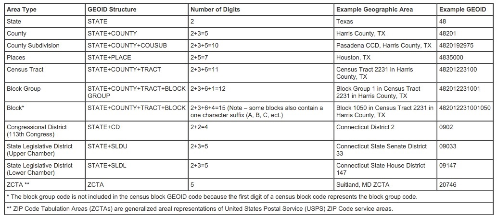

The U.S. Census and You!
Making Choropleths from Census Data
What is the U.S. Census?
It is a constitutionally mandated, decennial, population census for the purposes of apportioning seats in the House of Representatives.
Everyone living in the U.S. in a "residental structure" is counted, regardless of citizenship.
(Americans living abroad aren't counted...unless they work for the Federal Government.)
Here's what a dotmap of that looks like...
What questions are on the Census?
This 2010 Census was one of the shortest in the history of the U.S. Census. It consisted of only 10 questions.
In 1940, there were 50 questions.
Important Information about Census Data
Census data is only available as aggregate data.
(Unless it's over 72 years old or you have access to a Federal Research Data Center)
Census data is broken down into a series of increasingly smaller units
- state
- county
- tract
- block group
- block
Every census unit has a numeric geographic identifier (GEOID)
Not all Census tracts are equal
- Tracts are drawn by population, not geographic area.
- Population density can result in a wide range of tract sizes.
- The goal is to have between 1,200 and 8,000 residents in a tract, with 4,000 being the ideal.
Census units are redrawn for every Decennial Census
- People move, so tract boundaries are changed to maintain population size.
- Really important when trying to compare Census findings from one year to another.
Where do you get U.S. Census data?
American Fact Finder
This site provides access to all the tabular data available from the U.S. Census Bureau, which includes a lot more than just the Decennial Census. This is also where you'll find the American Community Survey, the American Housing Survey, and the Economic Census.
Finding the data you want
- Use the Download Center if you know what tables you need or you want prepackaged data
- Use Advanced Search if you need to explore the data more
- Use the Help option if you want to become a data ninja
TIGER
Topologically Integrated Geographic Encoding and Referencing
This is the clearinghouse for all of the U.S. Census Bureau's mapping products. Mapping products are available as shapefiles, geodatabases, and kmls.
Downloading county data from TIGER
- Go to the TIGER web interface
- Choose the year you want data for and then select "Counties (and Equivalent)" as the datatype
- On the next page, select the state or opt to download all the states in one file
- Click the download button and select where you want to save the file
Want data for a specific place but don't know it's GEOID?
Try TIGERweb
Getting Started with QGIS
Adding TIGER data to QGIS
- Click Add Vector Layer

- Use the Browse button to find your saved shapefile
- Click on the Open button
Adding Fact Finder data to QGIS
- Click Add Delimited Text Layer

- Use the Browse button to find your saved csv file
- Make sure the radio buttons for "CSV" and "No geometry" are selected
- Click OK
Finding your keys
In a GIS, primary and foreign keys are used to join layers together. A primary key is a unique identifier for each record that has no duplicate values and is not null. A foreign key, matches the primary key, but is located in a different table. In Census data, we use the GEOID for both keys.
You'll need to know which column in each of your data layers contains the GEOID. You can do this by right-clicking on a data layer and selecting Open Attribute Table. You'll then be able to scroll through the data and find the column is the one you want.
Performing a table join
- Right-click on the vector layer
- Select Properties and then the Joins tab
- Click on the green plus symbol
- In the pop-up menu, the Join Layer is the table layer you want to join, the Join Field is the foreign key, and the Target Field is the primary key
- Click Okay
- Open the attribute table and check that the join worked
Troubleshooting
- If your table join isn't working, first make sure that you're selecting the correct fields for your primary and foreign keys.
- If the columns are correct and it's still not working, check the Fields tab under the layer Properties to make sure the data types of the two columns are the same.
- If the column data types are different, you'll need a sidecar file to correct the problem.
Normalizing the Data
- Select the layer you want to normalize
- Open the Field Calculator

- Create a new field and name it
- Set the new field's field type, as well as the precision and width
- In the expression editor, write an expression that divides the data your want to normalize by a field containing population data
- Click Ok
Categorizing the Data
- Open the layer properties and select the Style tab
- Select Graduated from the upper left dropdown menu
- Use the Column dropdown menu to select your normalized field
- Select the Mode of classification you're going to use
- Click the Classify button in the middle of the screen to add your classes
- Click Ok
Choosing a Classification Scheme
The classification scheme you choose makes a big difference to how your map represents the data.
John Krygier breaks this down on his website.
Selecting a Color Scheme
Once again, John Krygier has this covered.
Using Colorbrewer in QGIS
- From the Settings menu, select Style Manager
- Choose the Color Ramp option and click Add
- In the dropdown menu, select ColorBrewer
- From here you can select any of the color schemes available on ColorBrewer
- Click Ok to choose your color scheme and then give it a name
- The next time you go to set a layer Style, you shoudl see the new color ramp as an option
*You can also make these changes in the Layer Properties Style tab*
QGIS Help
Anita Graser
- Lots of tips and tricks
- She even wrote the book on learning QGIS
QIS Tutorials
- Step by step tutorials on QGIS basics
- Sometimes misses a step or two, but usually pretty clear
QGIS Documentation
- For the Community, by the Community!
- Covers multiple versions of the software, be careful which one you're using